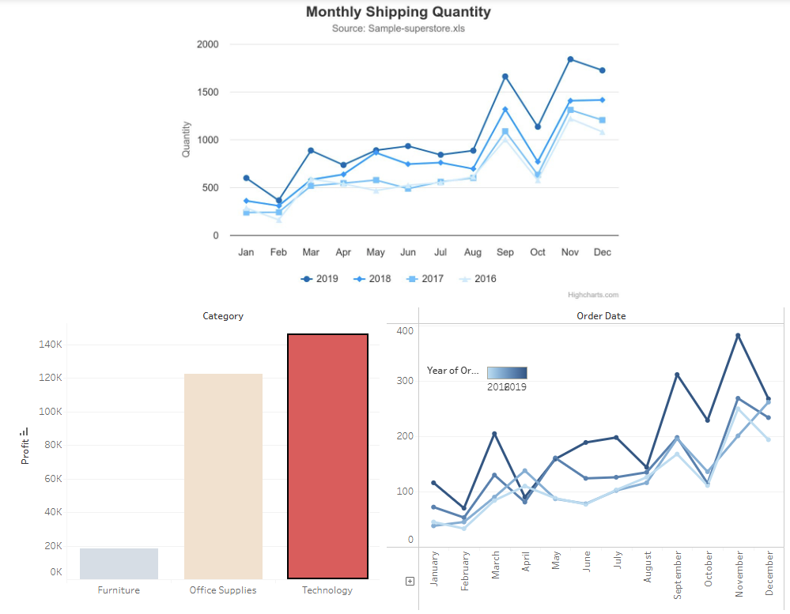
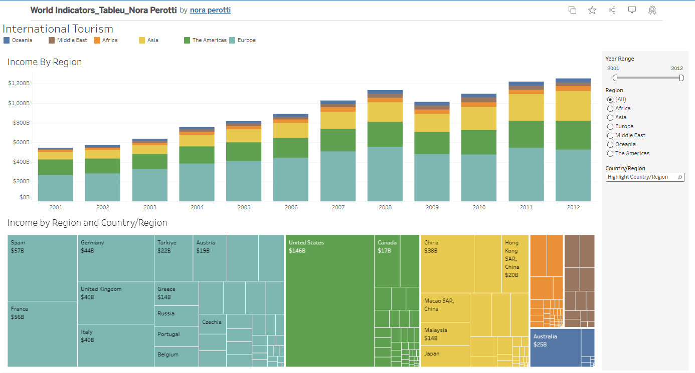
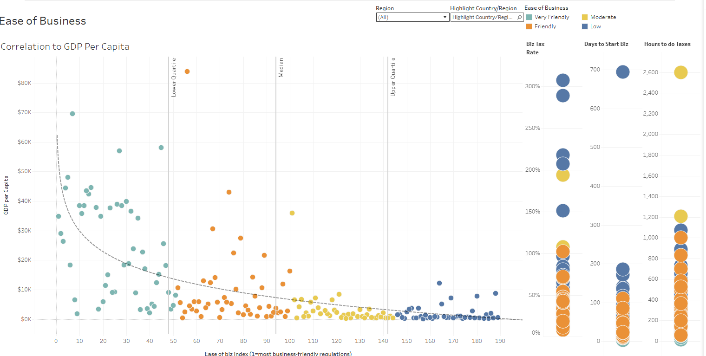
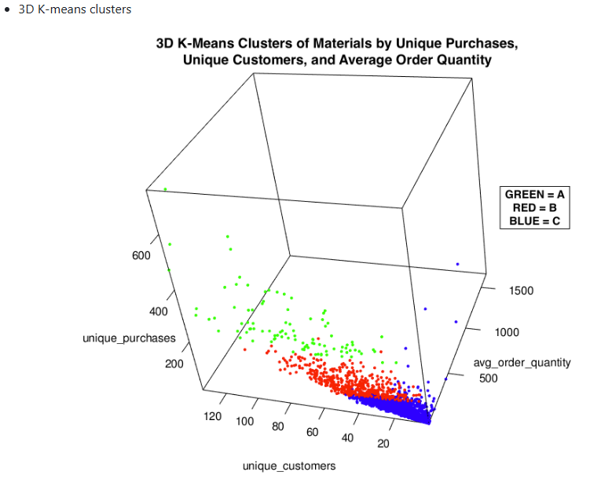
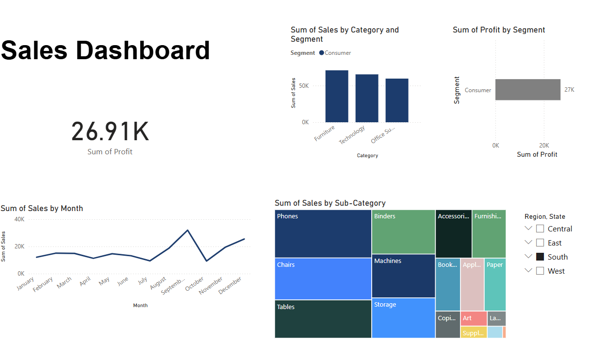
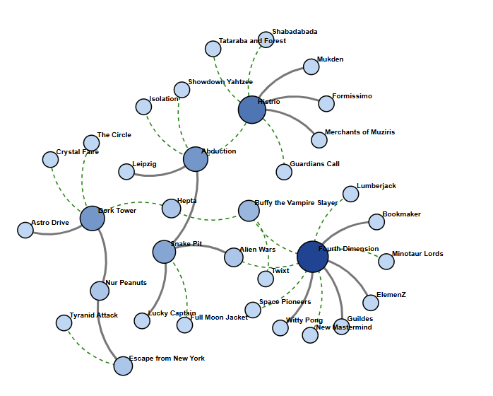
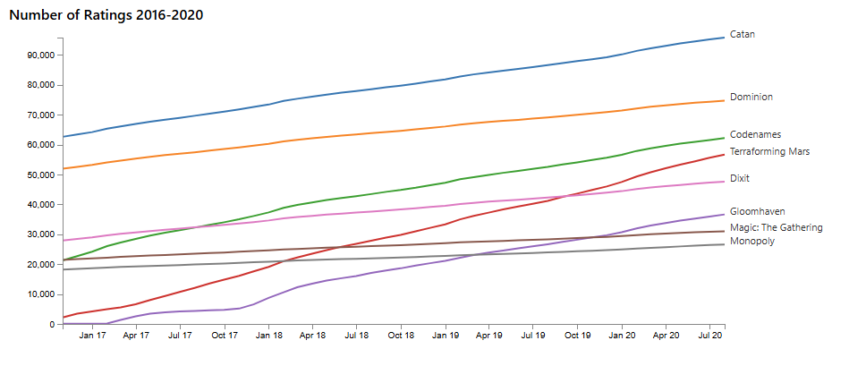
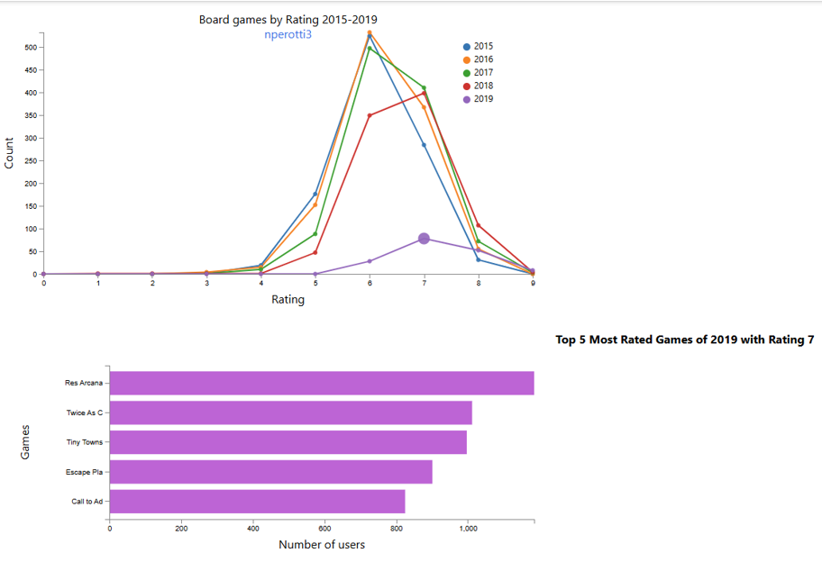

Superstore Tableau Dashboard
Interactive trends, category drilldowns • Tableau

Tableau — International Tourism
Tourism income by region & country (2001–2012) • stacked bars + treemap

Tableau — Ease of Business
GDP per capita vs. ease-of-business index • correlations & outliers

College Tuition Analysis
U.S. college costs, inflation-adjusted tuition trends, and institutional drivers • Python + Tableau

Supply Chain Analytics
Ops/Inventory dashboards & process automation • GitHub Pages

Power BI — Sales Dashboard
KPI overview, regional sales trends, and profitability analysis • Power BI

🎮 D3 Force-Directed Graph — Board Game Network
Interactive D3.js force layout with drag & pin, zoom/pan, degree-based node sizing, color by category, and hover tooltips.

🎮 D3 Line Charts — Board Game Ratings (2016–2020)
Interactive visualization built with D3.js v5 for a Data and Visualization project. Highlights board game popularity and rankings with linear, √, and log scales.

🎲 D3 Line Charts — Board Game Ratings (2015–2019)
Interactive D3.js v5 visualization built for a Project. This project explores board game popularity and user ratings from 2015–2019 using dynamic line and bar charts built entirely in D3.
